정보처리산업기사 (2000-07-23 기출문제)
1과목: 데이터 베이스
1. 선형 자료 구조에 해당되지 않는 것은?
- 스택(stack)
- 큐(queue)
- 트리(tree)
- 데크(deque)
(정답률: 88%)

2. 데이터베이스는 계속적으로 변화하는 현실 세계를 표현하는데, 이 현실 세계를 논리적으로 표현하기 위해 사용하는 지능적 도구를 의미하는 것은?
- 데이터 디렉토리
- 데이터 사전
- 데이터 모델
- 데이터베이스 기계
(정답률: 71%)
3. SQL 검색문의 기본적인 구조로 옳게 짝지어진 것은?
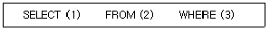
- (1)릴레이션 (2)속성 (3)조건
- (1)조건 (2)릴레이션 (3)튜플
- (1)튜플 (2)릴레이션 (3)조건
- (1)속성 (2)릴레이션 (3)조건
(정답률: 52%)
4. Which of the fallowing is not destrable properties of transaction?
- atomicity
- consistency preservation
- isolation
- validity
(정답률: 46%)
5. 뷰(View)에 대한 설명으로 옳지 않은 것은?
- 데이터베이스 일부만 선택적으로 보여주므로 데이터베이스의 접근을 제한할 수 있다.
- 복잡한 검색을 사용자는 간단하게 할 수 있다.
- 사용자에게 데이터의 독립성을 제공할 수 있다.
- 뷰는 별도의 디스크 공간을 차지하여 생성되는 실제적 테이블이다.
(정답률: 90%)
6. DBA의 일반적인 기능에 대한 설명으로 옳지 않은 것은?
- 계획-전체 조직의 사업 계획을 지원하는 데이터베이스 개발을 위한 전체적인 계획을 세운다.
- 설계-현재 그리고 향후 필요로 하는 조직의 요구사항을 개념 설계, 논리 설계, 물리 설계를 가져 데이터베이스화 한다.
- 구현-논리적으로 데이터베이스를 생성하고, 업무에 필요한 응용 프로그램을 개발한다.
- 확장 및 범용 데이터베이스의 성능 통제와 변경을 계획한다.
(정답률: 56%)
7. 다음 인접 행렬(adjacency matrix)에 대응되는 그래프(graph)를 그렸을 때 옳은 것은?
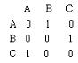
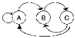
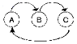
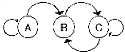
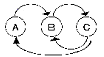
(정답률: 87%)
8. 개체간의 관계와 제약조건을 나타내고 데이터베이스의 접근 권한, 보안 및 무결성 규칙 명세가 있는 스키마는?
- 내부 스키마
- 외부 스키마
- 개념 스키마
- 서브 스키마
(정답률: 79%)
9. What is called that the catalog stores data that describes each databases?(문제오류로 실제 시험문제에서는 다, 라를 정답 처리한 문제입니다. 이곳에서는 가번을 정답 처리 하겠습니다.)
- tuple
- domain
- meta data
- schema
(정답률: 69%)
10. 한 릴레이션(relation)에 포함되어 있는 튜플(tuple)의 수를 무엇이라 하는가?
- 차수(degree)
- 카디널리티(cardinality)
- 도메인(domain)
- 속성(attribute)
(정답률: 77%)
11. 관계데이터 모델에서 참조무결성(referential integrity)에 대한 설명이다. 괄호 안의 내용으로 옳은 것은?
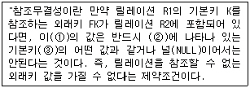
- ①R1 ②R2 ③K
- ①K ②R1 ③K
- ①FK ②R1 ③K
- ①FK ②R2 ③K
(정답률: 67%)
12. 주기억 장치 내에서 이루어지는 정렬 방법은?
- oscillating sort
- balanced sort
- polyphase sort
- insertion sort
(정답률: 60%)
13. 삽입 SQL(embedded SQL)에 대한 설명으로 옳지 않은 것은?
- 응용 프로그램에 삽입되어 사용되는 SQL이다.
- SQL 문장의 식별자로서 EXEC SQL을 앞에 기술한다.
- 호스트 변수와 데이터베이스 필드의 이름은 같아도 무방하다.
- 호스트 언어의 변수는 SQL 변수와 구별하기 위하여 앞에 % 기호를 붙인다.
(정답률: 66%)
14. 정렬 알고리즘 선택시 고려하여야 할 사항으로 거리가 먼 것은?
- 데이터의 양
- 초기 데이터의 배열상태
- 키 값들의 분포상태
- 운영체제의 종류
(정답률: 80%)
15. 관계 데이터베이스의 테이블인 수강(학번, 과목명, 중간성적, 기말성적)에서 과목명이 'DB'인 모든 튜플들을 성적에 의해 정렬된 형태로 검색하고자 한다. 이때 정렬 기준은 기말성적의 내림차순으로 정렬하고 기말성적이 같은 경우는 중간성적의 오름차순으로 정렬하고자 한다. 다음 질의문에서 ORDER BY 절의 밑줄 친 부분의 내용으로 옳은 것은?
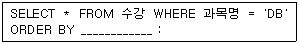
- 중간성적 DESC, 기말성적 ASC
- 기말성적 DESC, 중간성적 ASC
- 중간성적 D(1), 기말성적 A(2)
- 중간성적(DESC), 기말성적(ASC)
(정답률: 63%)
16. DBMS에서 사용할 데이터베이스의 정의 및 변경을 위해서 사용하는 연산은?
- DDL
- DML
- DCL
- DBL
(정답률: 82%)
17. 데이터베이스 서버(server)의 선정시 직접적인 조건으로 거리가 먼 것은?
- 고성능의 주기억장치와 빠른 입/출력 연산등이 수행될 수 있는 기능이 지원되어야 한다.
- 응용프로그램 개발이 용이해야 한다.
- 다양한 사용자 인터페이스가 지원되어야 한다.
- 대용량의 자료를 저장, 탐색할 수 있으며 분산 데이터 관리가 지원되어야 한다.
(정답률: 62%)
18. 스레드(threaded) 이진트리에 대한 설명으로 옳지 않은 것은?
- 널 링크를 다른 노드를 가리키는 포인터로 대체한다.
- Perlis. Thornton에 의해 널 링크를 이용하는 방법이 고안되었다.
- 스택의 도움 없이 트리를 순회할 수 있는 장점이 있다.
- 실제 포인터와 스레드를 구별하기가 쉽다.
(정답률: 60%)
19. ISAM(indexed sequential access method) 파일의 특징이 아닌 것은?
- 기본 데이터 구역은 데이터 레코드를 저장한다.
- 인덱스 구역은 데이터 구역에 대한 인덱스를 저장한다.
- 독립된 오버플로우 구역은 기본 데이터 구역에서 오버플로우된 레코드를 저장하는 구역이다.
- 인덱스 영역은 트랙 영역, 실린더 영역, 오버플로우 영역으로 구성된다.
(정답률: 50%)
20. 데이터베이스 설계과정 중 개념적 설계 단계에 대한 설명으로 옳지 않은 것은?
- 산출물로 개체관계도(ER-D)가 만들어진다.
- DBMS에 독립적인 개념 스키마를 설계한다.
- 트랜잭션 인터페이스를 설계한다.
- 논리적 설계 단계의 전 단계에서 수행된다.
(정답률: 35%)
2과목: 전자 계산기 구조
21. 중앙처리장치(CPU)의 기능이 아닌 것은?
- 기억기능
- 연산기능
- 제어기능
- 입력기능
(정답률: 69%)
22. 디지털 코드 중에서 에러검출 및 교정이 가능한 코드는?
- 그레이(Gray) 코드
- 해밍(Hamming) 코드
- 3초과(Excess-3) 코드
- BCD 코드
(정답률: 70%)
23. 순서 논리 회로(Sequential logic circuit)로써 제어 논리를 구성할 때 발생되는 단점으로 옳지 못한 것은?
- 설계 과정이 복잡하다.
- 회로 자체가 복잡하다.
- 처리 속도가 늦어진다.
- 고장 수리가 용이하지 못하다.
(정답률: 29%)
24. 레지스터 전송 마이크로 오퍼레이션의 전송 형태가 아닌 것은?
- 직렬 전송
- 병렬 전송
- 메모리 전송
- 버스 전송
(정답률: 57%)
25. EBCDIC 코드에 의한 (-123)10의 팩형식 십진수의 형태는?
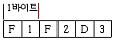
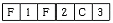
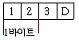
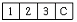
(정답률: 35%)
26. 인터럽트 사이클에 대한 마이크로 동작 중 관계없는 것은?(단, Interrupt handler)는 0번지에 저장되어 있다.)
- MBR←PC, PC←0
- MAR←PC, PC←0
- M←MBR, IEN←0
- fetch cycle로 간다.
(정답률: 39%)
27. '메모리가 제대로 동작하려면 어드레스 신호, 데이터 신호 및 ( )신호가 상호간 시간적 관계가 잘 유지되어야 한다.' ( )에 해당하는 올바른 신호는?
- 제어
- 호출
- 액티브(active)
- 상태(state)
(정답률: 63%)
28. 버스(bus)를 구성하는데 사용할 수 있는 논리회로는?
- encoder
- multiplexer
- counter
- comparator
(정답률: 60%)
29. 메모리를 참조하지 않고 데이터를 사용하는 번지 지정방식은?
- Direct Addressing
- Register Addressing
- Indirect Addressing
- Register Indirect Addressing
(정답률: 16%)
30. 전류 일치 기술(coincident-current technique)에 의하여 기억장소를 선별하는 기억장치는?
- 자기코어
- 자기 디스크
- 자기 테이프
- 자기 드럼
(정답률: 50%)
31. 부 프로그램(Sub program)에서 주 프로그램(Main progarm)으로 복귀할 때 필요한 주소를 기억시키든지 혹은 산술 연산을 할 때 변수와 연산자를 기억시키는데 적합한 것은?
- Queue
- Dequeue
- Stack
- Buffer
(정답률: 58%)
32. 인터럽트가 발생되는 원인에 들지 않는 것은?
- 자료 전달 과정에서 Error가 발생
- 불법적인 인스트럭션의 수행
- SVC(Super Visor Call) 명령 수행
- 무조건 Branch 명령의 수행
(정답률: 62%)
33. 1의 보수에 의해 표현된 수를 좌측으로 1 bit shift 하는 경우 입력되는 비트는?
- 1
- 0
- sing bit
- LSB(Least Significant Bit)
(정답률: 25%)
34. CPU의 명령을 받고 입·출력 조작을 개시하면 CPU와는 독립적으로 조작을 하는 것은?
- Register
- Channel
- Terminal
- Buffer
(정답률: 39%)
35. 다음 정보의 단위 중 하위의 개념에서 상위의 개념으로 올바르게 나열된 것은?
- 문자 - 항목 - 레코드 - 파일
- 문자 - 레코드 - 항목 - 파일
- 문자 - 파일 - 레코드 - 항목
- 문자 - 항목 - 파일 - 레코드
(정답률: 48%)
36. 액세스(access) 시간이 가장 짧은 것으로 가장 고속의 메모리 소자는?
- 코어(core)
- 바이폴라(bipolar)형
- 스태틱(static)-MOS형
- 다이나믹(dynamic)-MOS형
(정답률: 25%)
37. 가상기억장치에서 주기억장치로 자료의 페이지를 옮길 때 주소를 조정해 주어야 하는데 이것을 무엇이라 하는가?
- spooling
- blocking
- mapping
- buffering
(정답률: 52%)
38. 2개의 6 bit word를 위한 comparator를 만들기 위하여 몇 개의 exclusive NOR gate가 필요한가?
- 2
- 3
- 6
- 12
(정답률: 18%)
39. 컴퓨터시스템 내부에서 순간순간의 시스템 상태를 기록하고 있는 특별한 word를 무엇이라고 하는가?
- Interrupt
- Machine check
- PSW(Program Status Word)
- SVC 명령
(정답률: 55%)
40. 다중 프로그래밍에서는 여러 개의 프로그램이 동시에 병렬로 실행된다. 이때는 어떤 프로그램이 다른 프로그램에 의해 잘못 쓰여 지는 것을 무엇이라 하는가?
- 프로그램 보호
- 기계 보호
- 기억 보호
- PSW 보호
(정답률: 36%)
3과목: 시스템분석설계
41. 코드의 기능이라 볼 수 없는 것은?
- 표준화기능
- 분류기능
- 간소화기능
- 호환기능
(정답률: 53%)
42. 람바우(Rumbaugh) 객체 지향 분석의 모델링 방법에 해당하지 않는 것은?
- 동적(dynamic) 모델링
- 클래스(class) 모델링
- 객체(object) 모델링
- 기능(functional) 모델링
(정답률: 64%)
43. 자료흐름도(Data Flow Diagram)의 구성요소가 아닌 것은?
- 처리(process)-원
- 흐름(flow)-화살표
- 단말(terminator)-사각형
- 비교(compare)-마름모
(정답률: 43%)
44. 모듈의 독립성을 향상시키기 위한 결합도와 응집도는?
- 결합도는 약하고 응집도는 강해야 한다.
- 결합도는 강하고 응집도는 약해야 한다.
- 결합도와 응집도가 강해야 한다.
- 결합도와 응집도가 약해야 한다.
(정답률: 70%)
45. 시스템 설계를 위한 분석과정에 대한 설명으로 옳지 않은 것은?
- 환경의 변화에 유연성 있는 시스템을 개발하기 위해 기업환경 조사를 한다.
- 개발과정과 현장은 별개이므로 현장조사를 상세히 할 필요는 없다.
- 기업이 필요로 하는 기능과 활동을 조사한다.
- 기능분석을 위한 도구를 사용하여 모델을 설계한다.
(정답률: 86%)
46. 프로세스 설계시 유의할 사항으로 거리가 먼 것은?
- 오류에 대비한 체크 시스템을 고려한다.
- 신뢰성과 정확성을 고려한다.
- 시스템의 상태, 구성요소 및 기능 등을 종합적으로 표시한다.
- 각 부문별 담당자의 책임범위를 고려한다.
(정답률: 89%)
47. 컴퓨터로 처리할 데이터의 개수와 컴퓨터로 처리할 데이터의 개수가 같은지의 여부를 검사하는 체크 방법은?
- blank check
- total check
- data count check
- mode check
(정답률: 66%)
48. 모듈러 프로그래밍(Modular Programming)과 관계가 먼 것은?
- 기능적 방법을 이용한다.
- 부분보다 전체를 중요시 여긴다.
- 전체보다 부분을 중요시 여긴다.
- 프로그램의 복잡성을 제거하려는 기초 방법이다.
(정답률: 37%)
49. 마스터 파일(master file)안의 정보 변동에 의해 추가, 삭제, 교환을 하고 새로운 내용의 마스터 파일을 작성하는 것을 무엇이라 하는가?
- 병합(merge)
- 매칭(matching)
- 변환(conversion)
- 갱신(update)
(정답률: 75%)
50. 하나 이상의 유사한 객체들을 묶어서 하나의 공통된 특성을 표현한 객체 지향의 요소는?
- 객체(object)
- 클래스(class)
- 실체(instance)
- 메시지(message)
(정답률: 80%)
51. 발생한 데이터를 전표상에 기록하고, 일정한 시간단위로 일괄 수집하여 전산부서에서 입력매체에 수록하는 입력 방식은?
- 분산매체화 시스템
- 턴어라운드 시스템
- 집중매체화 시스템
- 직접입력 시스템
(정답률: 66%)
52. 코드화 대상 항목을 소정의 기준에 따라 대분류, 중분류, 소분류로 구분하고, 각 그룹 안에서 순차 번호를 배정하여 코드화하는 방식은?
- 구분코드
- 그룹분류코드
- 10진코드
- 부서코드
(정답률: 88%)
53. IPT(Improved Programming Technique)의 기술적인 측면과 거리가 먼 것은?
- 복합 설계
- 구조적 코딩
- 하향식 프로그래밍
- 상향식 프로그래밍
(정답률: 53%)
54. 경제성이 높고 속도가 빠르며, 프로그램 작성이 용이한 레코드 형식은?
- 블록화 가변길이 레코드
- 블록화 고정길이 레코드
- 비 블록화 가변길이 레코드
- 비 블록화 고정길이 레코드
(정답률: 52%)
55. 객체(Object)에 관한 설명으로 옳지 않은 것은?
- 객체는 데이터 구조와 그 위에서 수행되는 함수들을 가지고 있는 소프트웨어 모듈이다.
- 객체는 캡슐화와 데이터추상화로 설명된다.
- 객체는 자신의 상태를 가지고 있고 그 상태는 어떠한 경우에도 변하지 않는다.
- 객체는 데이터와 그 데이터를 조작하기 위한 연산들을 결합시킨 실체다.
(정답률: 66%)
56. 프로그래밍 지시서에 포함되지 않아도 무방한 것은?
- 관리 책임자명
- 설계서 작성자명
- 처리 개요
- 프로그램 작성기간
(정답률: 48%)
57. 시스템의 기본 요소에 해당하지 않는 것은?
- 제어
- 처리
- 피드백
- 유지보수
(정답률: 66%)
58. 파일 설계 순서로 옳은 것은?
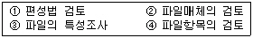
- ①-②-③-④
- ②-③-①-④
- ①-③-②-④
- ④-③-②-①
(정답률: 61%)
59. 프로그램 표준화 설계시에 꼭 필요한 사항으로 거리가 먼 것은?
- 프로그램 작성 지침서 통일
- 코딩방법 통일
- 시스템 정의서 통일
- 상세 순서도 통일
(정답률: 38%)
60. 자료 사전에서 사용되는 표기법 중 반복의 의미를 나타내는 기호는?
- +
- =
- [ ]
- { }
(정답률: 67%)
4과목: 운영체제
61. 도스(MS-DOS)에서 시스템 부팅시 반드시 필요한 파일이 아닌 것은?
- MSDOS.SYS
- CONFIG.SYS
- IO.SYS
- COMMAND.COM
(정답률: 41%)
62. 한 작업이 CPU를 할당받으면 그 작업이 종료될 때까지 다른 작업에게 CPU를 할당하지 못하는 스케줄링 기법에 해당하는 것으로만 짝지어진 것은?
- SRT, SJF
- SRT, HRN
- Round Robin, FIFO
- FIFO, SJF
(정답률: 43%)
63. 구역성(locality)에 있어서 공간(spatial) 구역성에 해당하는 것은?
- looping
- subroutine
- array
- stack
(정답률: 48%)
64. 프로그램이 실행할 때 기억장치 내의 모든 정보를 균일하게 참조하는 것이 아니라 어느 한 순간에 특정 부문을 집중적으로 참조하는 프로그램의 순차적인 성질을 무엇이라고 하는가?
- 참조국부성(locality of reference)
- 교체(swapping)
- 임계영역(critical section)
- 모니터(monitor)
(정답률: 59%)
65. 저장장치 배치 전략중 최초적합(first-fit)에 대한 설명으로 옳은 것은?
- 입력된 작업을 주저장장치 내에서 그 작업을 수용할 수 있는 첫 번째 공백에 배치시킨다.
- 입력된 작업을 주저장 장치 내의 공백 중에서 그 작업에 가장 잘 맞는 공백, 즉 사용되지 않는 공간을 가장 작게 남기는 공백에 배치한다.
- 입력된 작업을 주저장 장치 내에서 가장 잘 맞지 않는 공백, 즉 가장 큰 공백에 배치한다.
- 첫 번째 입력된 작업은 크기에 상관없이 무조건 주저장 장치 내의 첫 번째 공백에 배치한다.
(정답률: 63%)
66. unix에서 명령의 백그라운드 처리를 위해 명령의 끝에 입력하는 것은?
- *
- %
- &
- $
(정답률: 61%)
67. 운영체제의 설계목표가 아닌 것은?
- 빠른 응답시간
- 경과시간 단축
- 처리량 감소
- 폭넓은 이식성
(정답률: 76%)
68. 스래싱(thrashing) 현상을 방지하기 위한 방법이라고 할 수 없는 것은?
- 다중 프로그래밍의 정도를 높인다.
- CPU 이용률을 높인다.
- 페이지 부재율을 조절하여 대처한다.
- Working set 방법을 사용한다.
(정답률: 28%)
69. 다중 프로그래밍 시스템에서 운영체제에 의하여 cpu가 할당되는 프로세스를 변경하기 위하여 현재 cpu가 사용하여 실행되고 있는 프로세스의 상태정보를 저장하고, 앞으로 실행될 프로세스의 상태 정보를 설정한 다음에 cpu를 할당하여 실행되도록 하는 작업은?
- 오버레이(overlay)
- 스와핑(swapping)
- 워킹셋(working set)
- 문맥교환(context switching)
(정답률: 33%)
70. 인터럽트의 종류에 해당하지 않는 것은?
- 프로세스 인터럽트
- 입출력 인터럽트
- 외부 인터럽트
- SVC(Supervisor Call) 인터럽트
(정답률: 44%)
71. 통합(coalescing)과 압축(compaction)에 대한 설명으로 옳지 않은 것은?
- 인접한 공백들을 하나의 공백으로 합하는 과정을 통합이라 한다.
- 모든 사용되고 있는 기억장소를 주기억 장치의 한쪽 끝으로 옮기는 것을 압축이라 한다.
- 압축은 단편화의 해결 방안이 될 수 없다.
- 압축 후에는 하나의 커다란 공백이 생기게 된다.
(정답률: 64%)
72. 교착 상태의 필요충분조건에 해당하지 않는 것은?
- mutual exclusion
- hold and wait
- circular wait
- preemption
(정답률: 56%)
73. 사용자 password에 대한 설명으로 옳지 않는 것은?
- 추측 가능한 사용자의 전화번호, 생년월일 등으로는 구성하지 않는 것이 바람직하다.
- 암호가 짧을수록 추측에 의한 암호 발각 가능성이 희박하다.
- 암호는 자주 변경하는 것이 바람직하다.
- 불법 액세스를 방지하는데 사용된다.
(정답률: 86%)
74. 클라이언트/서버 시스템의 장점이 아닌 것은?
- 에러 발생시 원인 파악이 용이하다.
- 시스템 확장이 용이하고 유연성이 있다.
- 사용자 중심의 개별적인 클라이언트 운영환경이 가능하다.
- 개방형 시스템으로 다양한 하드웨어와 소프트웨어 선택이 가능하다.
(정답률: 44%)
75. 여러 개의 큐를 두어 낮은 단계로 내려갈수록 프로세스의 시간 할당량을 크게 하는 프로세스 스케쥴링 방식은?
- MFQ
- SJF
- SRT(Shortest Remaining Time)
- Round-Robin
(정답률: 38%)
76. 파일의 보조기억장치에 대한 디스크 공간 할당 기법 중 연속할당 기법 중 연속할당 기법의 설명으로 옳은 것은?
- 사용자는 만들고자 하는 파일의 크기에 해당하는 디스크 공간을 미리 지정해 주어야 한다.
- 논리적으로 연속된 레코드들이 물리적으로는 서로 무관하게 저장된다.
- 논리적으로 연속된 레코드들이 전체 디스크에 퍼져 있는 경우보다는 액세스 시간이 증가한다.
- 디렉토리에는 각 파일의 시작주소와 파일의 길이만이 유지되므로 디렉토리 구현이 어렵다.
(정답률: 52%)
77. 운영체제의 기능에 대한 설명으로 거리가 먼 것은?
- 컴퓨터를 초기화시켜 작업(JOB)을 수행할 수 있는 상태로 유지시키는 역할을 한다.
- 컴퓨터 자원을 여러 이용자가 나누어 사용할 수 있도록 자원을 관리한다.
- 하드웨어와 사용자 사이에 내부 및 외부 인터페이스를 제공한다.
- 소프트웨어나 하드웨어에 오류가 발생하면 운영체제는 회복을 위해 어떤 일도 할 수 없다.
(정답률: 73%)
78. UNIX의 커널(Kernel)에 대한 설명으로 옳지 않은 것은?
- 명령어를 해석하여 실행한다.
- 파일 시스템의 접근 권한을 처리한다.
- 시스템의 기억장소와 각 프로세스의 배당을 관리한다.
- 시스템에서 처리되는 각종 데이터를 장치간에 전송하고 변환한다.
(정답률: 57%)
79. 세마포어에 대한 설명으로 옳지 않은 것은?
- Dijkstra는 교착상태에 대한 문제를 세마포어라는 개념을 이용하여 해결하였다.
- 세마포어에 대한 오퍼레이션들은 소프트웨어나 하드웨어로 구현 가능하다.
- 이진 세마포어는 오직 0과 1의 두가지 값을 가지며, 산술 세마포어는 0과 양의 정수를 값으로 가질 수 있다.
- 프로세스 사이의 동기를 유지하고 상호 배제의 원리를 보장할 수 있다.
(정답률: 28%)
80. 분산 시스템의 장점이 아닌 것은?
- 보안이 향상된다.
- 자원 공유가 가능하다.
- 신뢰성이 보장된다.
- 연산 처리 속도가 향상된다.
(정답률: 78%)
5과목: 정보통신개론
81. 통신망에 접속된 컴퓨터와 단말장치 간에 효율적이고 원활한 정보를 교환하기 위하여 정보통신시스템이 갖추어야 할 제어기능과 방식을 총칭하여 무엇이라 하는가?
- 전송제어
- 에러제어
- 흐름제어
- 동기제어
(정답률: 39%)
82. 패킷교환망과 패킷교환망의 연결을 망간 접속이라 한다. 망간 접속을 위한 프로토콜을 규정하고 있는 권고 안은?
- X.25
- X.28
- X.75
- X.121
(정답률: 44%)
83. LAN의 전송매체 중 가장 좋은 것은?
- 무장하 케이블
- 차폐 나선
- 동축케이블
- 광섬유 케이블
(정답률: 74%)
84. 다음 중 정보통신망에 해당되지 않는 것은?
- SUN
- ISDN
- LAN
- VAN
(정답률: 77%)
85. 정보전송시스템 망으로 이루어진 것은?
- 데이터 단말장치, 입출력장치, 통신제어장치
- 중앙처리장치, 기억장치, 입출력장치
- 데이터 단말장치, 데이터 전송회선, 통신제어장치
- 데이터 전송회선, 통신제어장치, 중앙처리장치
(정답률: 71%)
86. 컴퓨터와 주변기기 사이의 데이터 전송을 위해 주로 이용되는 전송방식은?
- 비월전송방식
- 순차전송방식
- 병렬전송방식
- 직렬전송방식
(정답률: 65%)
87. 다음 중 정보통신관련 국제표준기구가 아닌 것은?
- IMO
- ISO
- ITU
- IEC
(정답률: 56%)
88. 데이터 전송에서 1차원 Parity는 어느 목적으로 사용하는가?
- 수신된 데이터에서 '1'의 개수를 셀 때
- 수신된 데이터에서 전송오류의 검출을 위해
- 수신된 데이터에서 전송오류의 정정을 위해
- 수신된 데이터에서 전송오류의 검출과 정정을 위해
(정답률: 65%)
89. 다음의 그림과 맞지 않는 VAN의 통신처리 기능은?
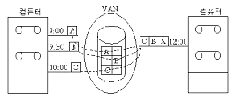
- 정시 집신, 배신기능
- 프로토콜 변환
- 동보통신기능
- 전자사서함 기능
(정답률: 27%)
90. VAN에 대한 설명중 틀린 것은?
- 불특정 다수를 대상으로 서비스로서 이중 간 통신 실현을 위해 프로토콜 변환 등의 기능을 갖는다.
- VAN의 가장 큰 기능은 각종 데이터를 교환하는 통신기능에 있다.
- 전용선 회신 망에 의한 서비스가 주류를 이루고 있다.
- 기업 간 전산망(EDI)등과 공통적 특성을 갖는다.
(정답률: 24%)
91. 호출하는 데이터신호가 DTE/DCE 인터페이스 사이의 교환 순서로서 가장 올바른 것은?
- 신호요청-선택신호- 선택시작-신호 진행시작-연결-데이터 준비
- 신호요청-선택시작- 선택신호-신호 진행시작-연결-데이터 준비
- 신호요청-신호 수락준비-입력신호 선택-신호연결-신호 진행시작-데이터 준비
- 신호요청-신호 수락준비-데이터 준비-신호연결-신호 진행시작- 데이터 연결
(정답률: 20%)
92. 다음중 광섬유케이블의 특징이 아닌 것은?
- 전송손실이 극히 적다.
- 접속 및 확장이 불가능하다.
- 전기적으로 무유도성, 무누화이다.
- 초광대역성이다.
(정답률: 75%)
93. VAN 서비스의 출현 배경으로 적절하지 않은 것은?
- 새로운 자연 환경의 변화
- 정보통신 기술의 발달
- 정보에 대한 수요 증대
- 사무 및 공장 자동화 기술의 발달
(정답률: 59%)
94. 다음 중 정보통신 시스템을 구성하는 기본요소에 해당되지 않는 것은?
- 컴퓨터 시스템
- 데이터 전송회선
- 데이터 단말장치
- 시간분할 시스템
(정답률: 59%)
95. 아날로그 데이터를 전송하기 위해 디지털 형태로 변환하고 또 이러한 디지털 형태를 원래의 아날로그 데이터로 복구시키는 장비는?
- MODEM
- DSU
- CODEC
- CCP
(정답률: 50%)
96. 대표적인 문자 위주 프로토콜로 BSC(Blnary Synchronous Control)가 있다. 이의 특징으로 적합하지 않는 것은?
- 전이중전송만 지원한다.
- 에러제어와 흐름제어를 위해서는 정지-대기 방식을 사용한다.
- 점-대-점(Point to Point)링크 뿐만 아니라 멀리토인드 링크에서도 사용될 수 있다.
- 주로 동기전송을 사용하나 비동기 전송방식을 사용하기도 한다.
(정답률: 58%)
97. 정보통신시스템의 구성요소에 대해 용어 설명 중 옳지 않은 것은?
- DSU-신호변환장치
- FEP - 전단제어장치
- CCU - 통신제어장치
- DTE - 데이터 회선 종단장치
(정답률: 36%)
98. 다음 그림은 정보통신시스템의 기본구성을 나다낸다. A,B,C,D,에 해당하는 것은?
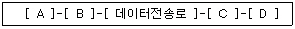
- A:DTE B:DTE C:DCE D:DCE
- A:DCE B:DTE C:DTE D:DCE
- A:ACE B:DCE C:DTE D:DTE
- A:DTE B:DCE C:DCE D:DTE
(정답률: 52%)
99. 다음 중 OSI 참조모뎀의 가장 하위계층은?
- 응용계층
- 표현계층
- 세션계층
- 데이터링크계층
(정답률: 59%)
100. 다음 중 디지털변조방식이 아닌 것은?
- PCM
- FM
- DM
- PSK
(정답률: 28%)